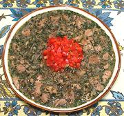

|
Chicken Stew with WineGeorgia - Mokhrakuli Kotami Gurulat | ||||
| Serves: Effort: Sched: DoAhead: |
4 main *** 1-3/4 hrs Yes |
A meaty stew of chicken, with a light tangy sauce of onions, herbs, white wine and lemon. This dish is served with bread in Georgia, but I usually serve with steamed rice. | |||
|
1-1/2 12 ------ 2 1 3/4 1/3 2 1 ------ 1/2 1/4 1 ------ 2 2 1 |
# oz --- T t t t t --- c c ea --- T c T |
Chicken Meat (1) Onions -- Spices mix Walnuts, ground Coriander Seeds Marigold Petals (2) Pepper, black. Cloves Salt -- Herb mix Cilantro (3) Parsley, flat Lemon Zest ---------- Ghee (4) Wine dry white Lemon Juice |
Prep - (45 min)
|